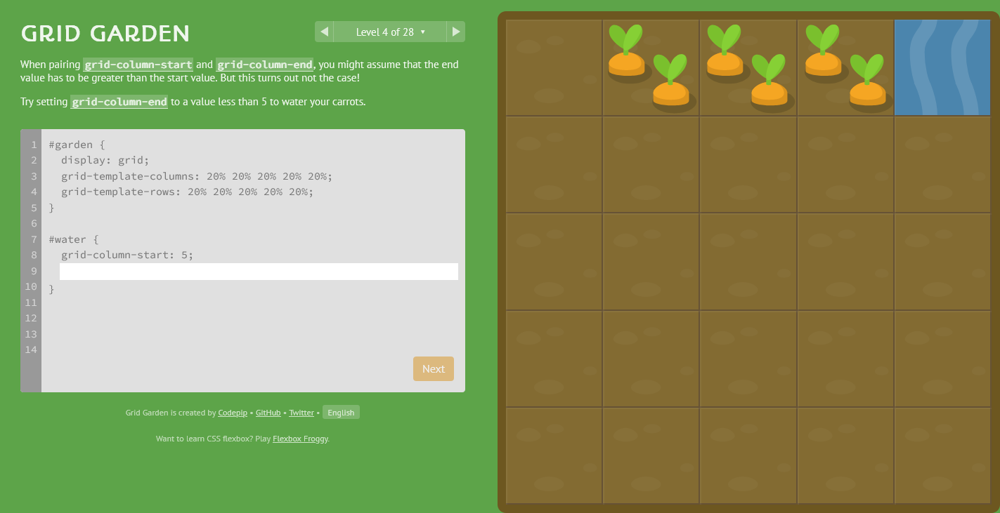
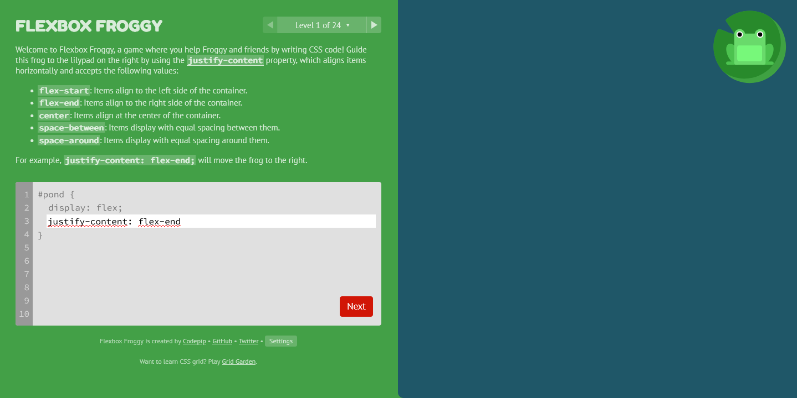
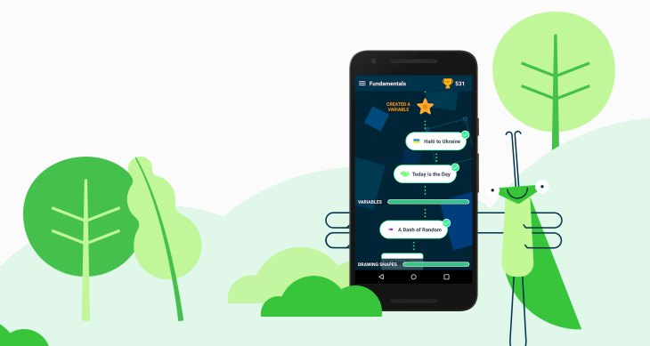
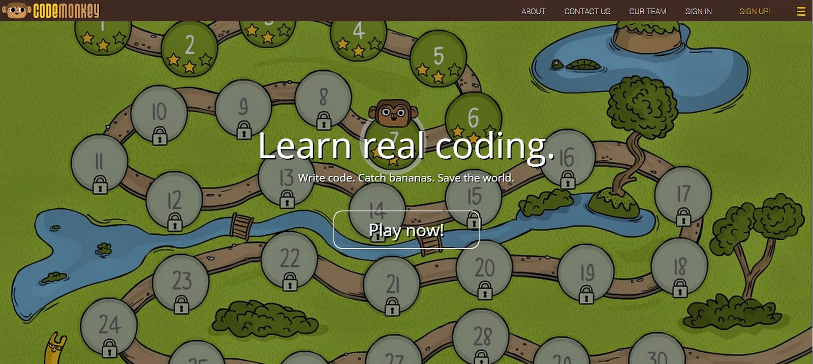
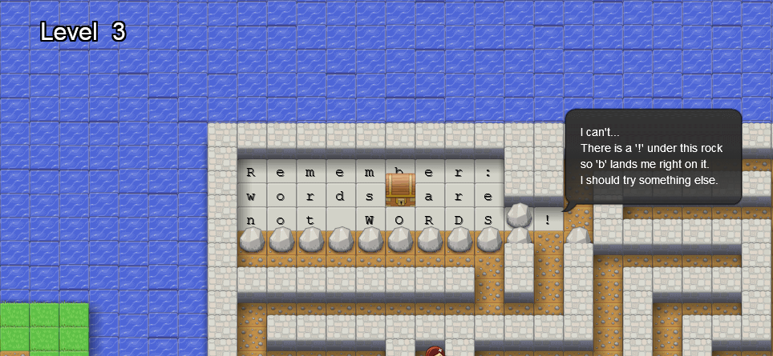
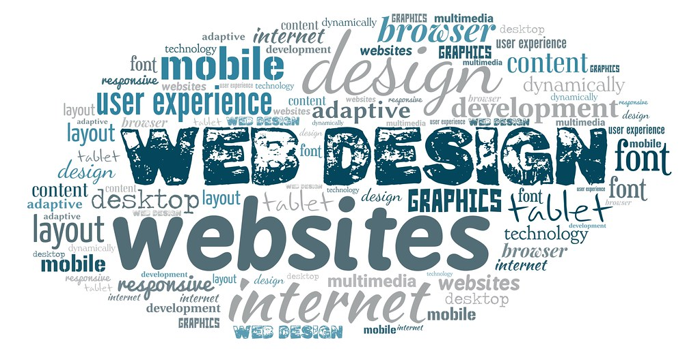
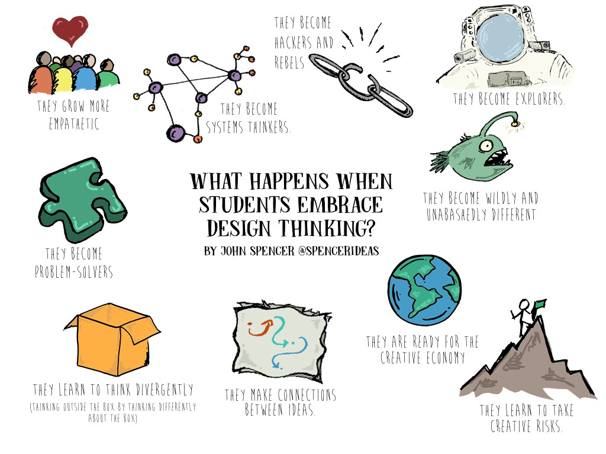
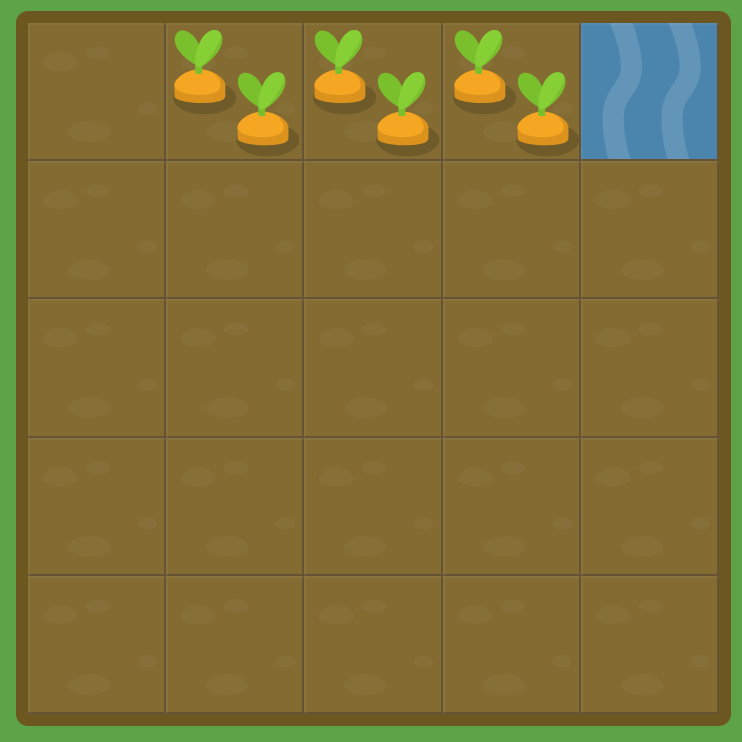
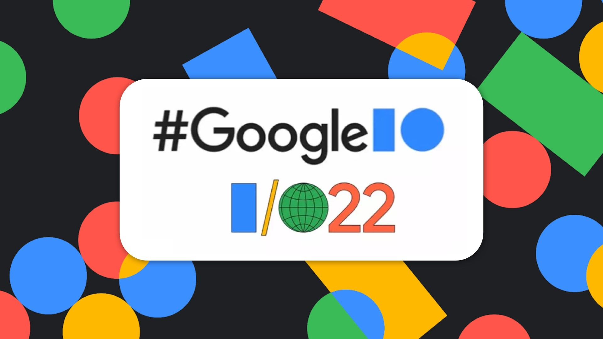

Web Design
Design Thinking
Layouts
Design Responsivo
Jogos Pedagógicos
Aplicativos populares

Slack
O Slack é um conjunto baseado em nuvem de ferramentas e serviços proprietários de colaboração em equipe, fundado por Stewart Butterfield. O Slack começou como uma ferramenta interna usada por sua empresa, Tiny Speck, no desenvolvimento do Glitch, um jogo online agora extinto.

WhatsApp é um aplicativo multiplataforma de mensagens instantâneas e chamadas de voz para smartphones. Além de mensagens de texto, os usuários podem enviar imagens, vídeos e documentos em PDF, além de fazer ligações grátis por meio de uma conexão com a internet.

Telegram
O Telegram é um serviço de mensagens instantâneas baseado na nuvem. O Telegram está disponível para smartphones ou tablets, computadores e também como Aplicação web. Os usuários podem enviar mensagens e trocar fotos, vídeos, stickers e arquivos de qualquer tipo.

Trello
Trello é um aplicativo de gerenciamento de projeto baseado na web originalmente feito por Fog Creek Software em 2011. Em 2014 tornou-se uma empresa. Ele opera um modelo de negócio Freemium, no qual é disponibilizado a versão gratuita ou paga para o usuário.

Skype
Skype é um software que permite comunicação pela Internet através de conexões de voz e vídeo, criado por Janus Friis e Niklas Zennstrom. O Skype foi lançado no ano de 2003. Em 2005 foi vendido para a empresa eBay e pertence, desde maio de 2011, à Microsoft.
Jogos Pedagógicos

Grid Garden
How well can you tend to your carrot garden using CSS grid? In this game, you must water your carrot crops and poison the weeds by mastering CSS grid, a powerful new module that makes 2-dimensional grid layouts a piece of cake. With it you can define columns, rows, and grid template areas.

Flexbox Froggy
A game where you help Froggy and friends by writing CSS code! Guide this frog to the lilypad on the right by using the justify-content property, which aligns items horizontally and accepts the following values.

Grasshopper
Aprenda a programar em qualquer lugar. O Grasshopper está disponível para Android e todos os navegadores da Web. Seu progresso é sincronizado perfeitamente em todos os dispositivos.

CodeMonkey
CodeMonkey é um ambiente de codificação de computador educacional que permite que iniciantes aprendam conceitos e linguagens de programação de computador. CodeMonkey é destinado a alunos de 6 a 14 anos.

VIM Adventures
VIM Adventures is an online game based on VIM's keyboard shortcuts. It's the "Zelda meets text editing" game. So come have some fun and learn some VIM!
Em Destaque

Web Design
O web design é uma extensão da prática do design gráfico, onde o foco do projeto é a criação de web sites e documentos disponíveis no ambiente da World Wide Web. O web design tende à multidisciplinaridade, uma vez que a construção de páginas web requer subsídios de diversas áreas técnicas, além do design propriamente dito.

Design Thinking
Design Thinking é o conjunto de métodos e processos para abordar problemas relacionados à aquisição de informações, análise de conhecimento e propostas de soluções.

Layouts
Em Cascading Style Sheets, o layout de grade CSS ou a grade CSS criam layouts de grade de design da Web complexos e responsivos com mais facilidade e consistência em todos os navegadores. Veja aqui exemplos de layouts.

Design Responsivo
O design responsivo é uma técnica que permite que a interface de um site ou aplicativo seja adaptada em qualquer tipo e tamanho de tela, tornando-a responsiva, ou seja, sem qualquer distorção ou inacessibilidade no conteúdo em todos os dispositivos.

Jogos Pedagógicos
Os videogames podem também servir como instrumentos de aprendizado, uma forma lúdica de manter suas engrenagens funcionando, com desafios lógicos no mundo da programação disfarçados de diversão. Veja aqui uma lista dos melhores jogos para melhorar ou começar a aprender programação.
Lançamentos

Google I/O 2022
Confiras as grandes novidades anunciadas no Google I/O 2022.

Organizze
Usado por mais de 1 milhão de pessoas, o Organizze é uma ferramenta online que vai facilitar sua vida financeira.
Emprego
Dicas de como se sair bem na sua entrevista.

Home Office
Confira as melhores oportunidades em home office.
Web Domain
Gratuitas ou pagas? Veja as melhores opções para seu domínio web.